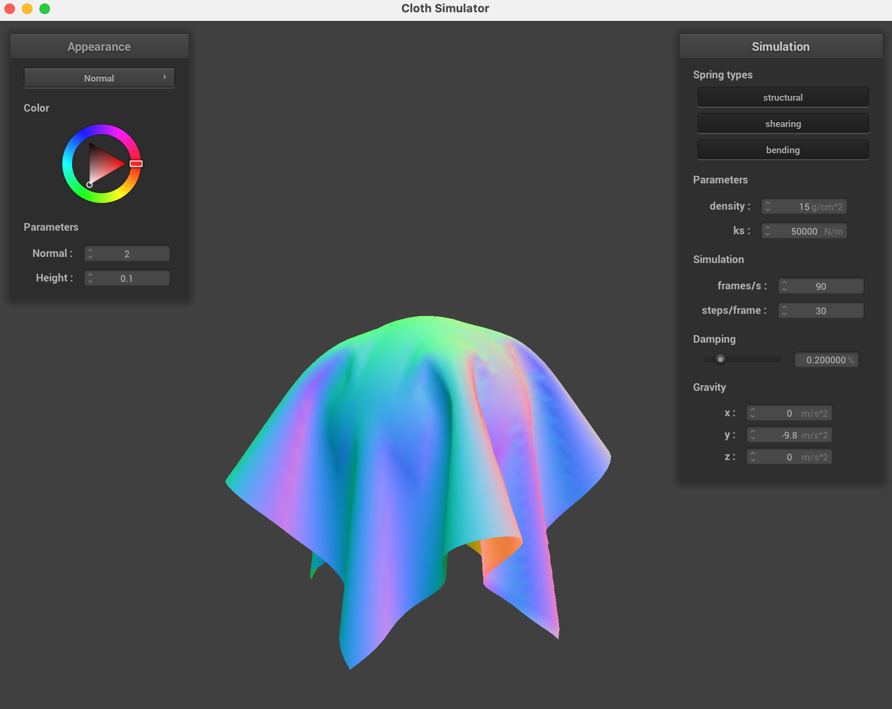
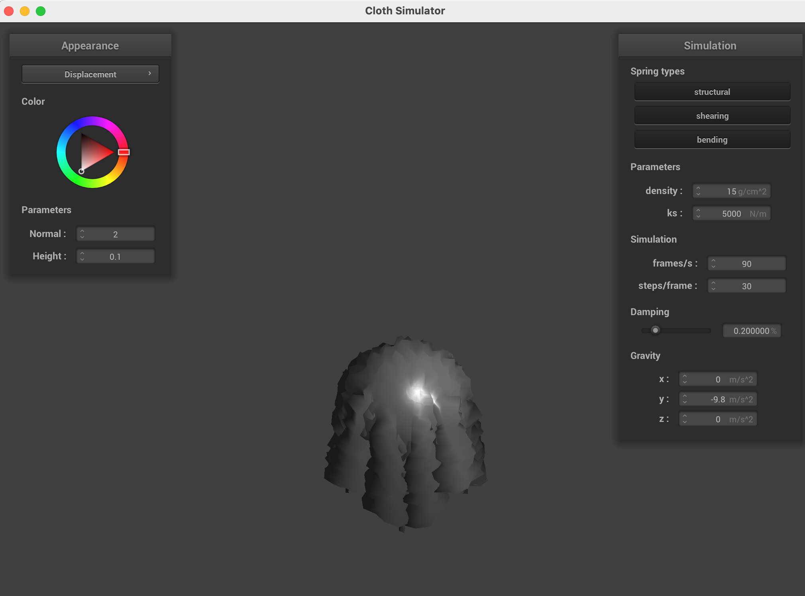

Ethan Weber | Project 4 | CS184/284a
Overview of the project
This project involves a lot of components but focuses on cloth simulation with forces, and then goes onto some shading applications. You can see the code for details on implementation, but here I explain a brief overview. The first part is constructing the cloth with point masses and springs with different forces including structure, shearing, and bending constraints. Part 2 then has to the the simulation over time with numerical integraion and making sure to account for edge cases. Part 3 is all about handing collisions and correcting intersections. The geometries considered are spheres, planes, and self-intersections with the cloth. Some hashing is involved to avoid O(n^2) comparisons! :) Finally, part 5 is about using shaders to change the geometry and visual effects by changing the .vert and .frag files.
Technical details
Use whatever screenshot software or tools you are comfortable or familiar
with, just like in Project 2.
Deliverables
Part 1
-
Take some screenshots of scene/pinned2.json from a viewing
angle where you can clearly see the cloth wireframe to show the
structure of your point masses and springs.
-
Show us what the wireframe looks like (1) without any shearing
constraints, (2) with only shearing constraints, and (3) with all
constraints.
Some screenshots from different viewpoints:
Screenshots (1) without any shearing constraints, (2) with only shearing
constraints, and (3) with all constraints in order:
Part 2
-
Experiment with some the parameters in the simulation. To do so, pause
the simulation at the start with
P, modify the values of
interest, and then resume by pressing P again. You can also
restart the simulation at any time from the cloth's starting position by
pressing R.
-
Describe the effects of changing the spring constant
ks; how does the cloth behave from start to rest with a
very low ks? A high ks?
- What about for
density?
- What about for
damping?
-
For each of the above, observe any noticeable differences in the
cloth compared to the default parameters and show us some
screenshots of those interesting differences and describe when they
occur.
-
Show us a screenshot of your shaded cloth from
scene/pinned4.json in its final resting state! If you choose to
use different parameters than the default ones, please list them.
Spring constant ks.
Changing the spring constant ks affects how ridged the cloth behaves. A very
low ks will make the cloth more flimsy and take longer for the cloth to come
to rest when falling. Also, when it falls to the ground is will be droopy,
meaning it's not a rigid rectangular plane. However, when using a large ks
-- then the opposite is true. The clothe quickly comes to rest after falling
and maintains a rectangular structure. Here are some examples:
Density.
Density affects the mass. When using a low density, the resting state is a
rectangular structure because the cloth can maintain it's shape with the
springs. However, when it's really heavy (i.e., high density and therefore
high mass), then the cloth will be droopy. Here are some examples:
Damping.
Damping is used to simulate the loss of energy due to friction, heat less,
etc. A lot of damping makes the cloth falls very slowly. With little
damping, the cloth falls very quickly. It seems as though the rest state is
the same regardless of the damping setting. However, no damping is unstable
and leads to unpredictable behavior! Too little damping and the cloth moves
around quite rapidly until becoming stable. Here is an example where the
density is really tiny and the cloth overshoots it's resting state by a lot
before setting down.
Here are some screenshots of the final resting state with the default
parameters.
Part 3
-
Show us screenshots of your shaded cloth from
scene/sphere.json in its final resting state on the sphere
using the default
ks = 5000 as well as with
ks = 500 and ks = 50000. Describe the
differences in the results.
-
Show us a screenshot of your shaded cloth lying peacefully at rest on
the plane. If you haven't by now, feel free to express your colorful
creativity with the cloth! (You will need to complete the shaders
portion first to show custom colors.)
Here are some screenshots with the default ks = 5000 values for the
sphere.json file. Cool stuff! :)

Here are some screenshots for ks = 500 and ks = 50000 respectively. ks = 50000 is much more stiff and you'll notice the cloth is less droopy!

Finally, here is the screenshot for the cloth resting on the plane.
Part 4
-
Show us at least 3 screenshots that document how your cloth falls and
folds on itself, starting with an early, initial self-collision and
ending with the cloth at a more restful state (even if it is still
slightly bouncy on the ground).
-
Vary the
density as well as ks and describe
with words and screenshots how they affect the behavior of the cloth as
it falls on itself.
Here are some screenshots with default params occuring over time showing how
the cloth falls onto itself.
Here are is an examble with a high density of 100. Notice how much more the
cloth falls onto itself and doesn't spread out.
Here are is an example with a high ks of 20000. Now the cloth is a lot more stiff and ends much more flat.
Part 5
-
Explain in your own words what is a shader program and how vertex and
fragment shaders work together to create lighting and material effects.
-
Explain the Blinn-Phong shading model in your own words. Show a
screenshot of your Blinn-Phong shader outputting only the ambient
component, a screen shot only outputting the diffuse component, a screen
shot only outputting the specular component, and one using the entire
Blinn-Phong model.
-
Show a screenshot of your texture mapping shader using your own custom
texture by modifying the textures in
/textures/.
-
Show a screenshot of bump mapping on the cloth and on the sphere. Show a
screenshot of displacement mapping on the sphere. Use the same texture
for both renders. You can either provide your own texture or use one of
the ones in the textures directory, BUT choose one that's not the
default
texture_2.png. Compare the two approaches and resulting
renders in your own words. Compare how your the two shaders react to the
sphere by changing the sphere mesh's coarseness by using
-o 16 -a 16 and then -o 128 -a 128.
-
Show a screenshot of your mirror shader on the cloth and on the sphere.
- Explain what you did in your custom shader, if you made one.
A shader program are programs than can run in parallel on GPU, making them
way faster than using the CPU. They are great for graphics applications
where each vertex, for example, can be processed in parallel.
Vertex shaders modify vertices including position and normal vectors
and set the final position of gl_Position, "which is the final screen-space
location of this vertex which the GPU's triangle rasterizer takes in"
according to the Default.vert file.
Fragment shaders after used after rasterization. These will take in
the geometric attributes and compute the color, writing it to out_color.
These work together sequentially to create lighting and material effects.
The Blinn-Phong shading model has a few different lighting components:
ambient, diffuse, and specular lighting. Essentially, this model is used to
approximate the different lightings that light has on vertices, which have a
certain normal associated with them and a distance to the light source(s).
The bisector between the viewer and light-source vectors is used in the
computation for the specular component. The "reflection lobe" can be
narrowed by increasing the value p in the exponent of the specular component
term.
Here we show ambient only, diffuse only, and specular only components, and
then all together. The coefficients are ka = 0.1, kd = 1.0, and ks = 0.5.

Here are some images with a custom texture:
Here are some screenshots of BUMP MAPPING on the cloth and sphere.
Here are some screenshots of DISPLACEMENT MAPPING on the cloth and sphere.

Here we show in order: "bump mapping, -o 16 -a 16", "displacement mapping, -o 16 -a 16", "bump mapping, -o 128 -a 128", "displacement mapping, -o 128 -a 128".
Notice how bump adds some bumps while displacement changes the geometry. Also, you can see that 16 is much more coarse and hence the changes look like so. With 128, the coarseness is more fine-grained so the changes are more frequent with higher frequency on the surface. Changes are more uniform for the fine-grained coarseness.
Here is a screenshot of the mirror shader of the cloth on the sphere.